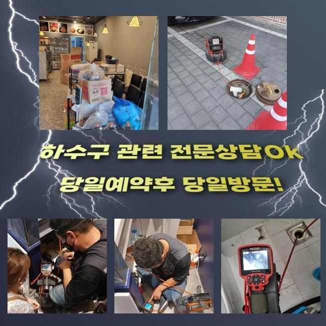
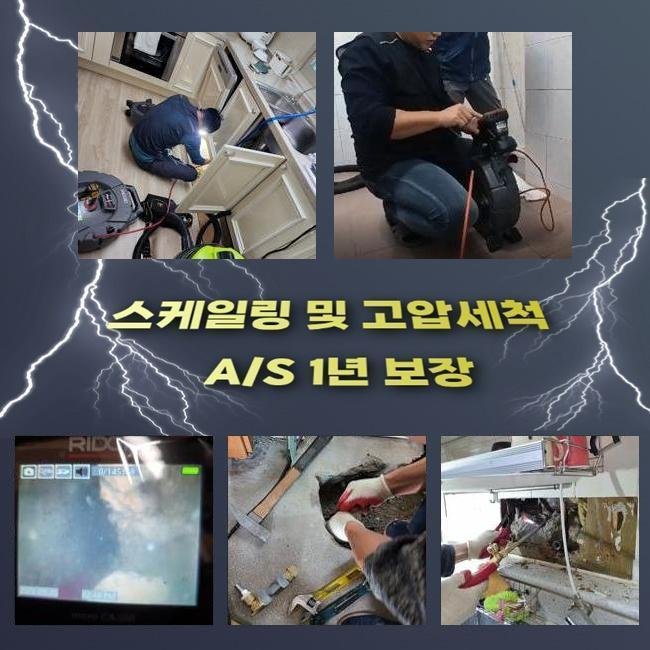
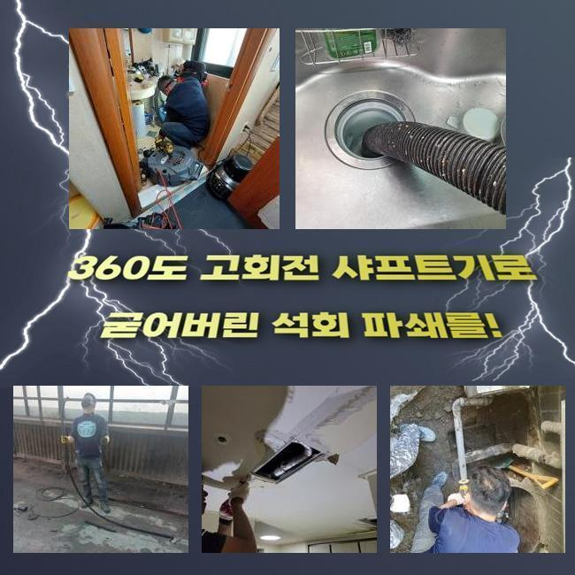
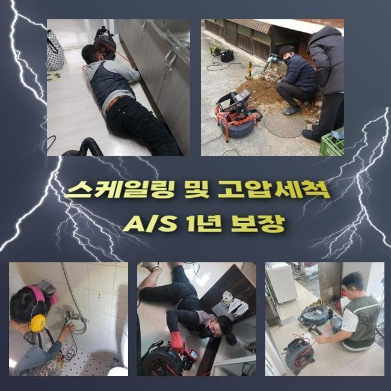
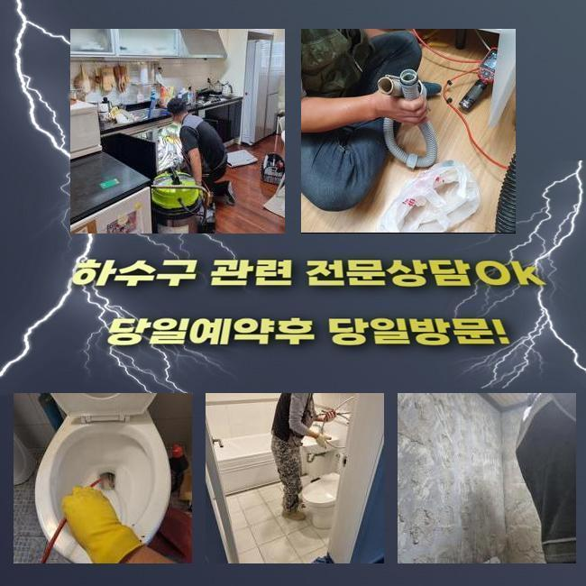
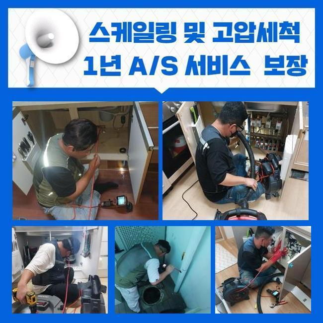

🏠 막계동욕실역류 별양동 하수구뚫어주는곳 배관공사
용인 하수구막힘 전문 시공 후기

📋 작업 개요
- 위치: 용인
- 서비스 유형: 하수구막힘, 배관막힘, 누수수리, 역류해결, 뚫는업체, 고압세척, 설비공사, 악취차단
- 작업 일시: 2025. 5. 9. 12:48
- 업체명: 하수구수사대 (010-5615-2118)
🔍 문제 상황
막계동욕실역류 별양동 하수구뚫어주는곳 배관공사
관로가 정체되는 문제는 한번쯤은 경험하셨으리라 생각하는데요
특히 욕실 및 개수대에서 발현되는 배수관 정체는 일상에 곤란함을 촉발시킬수 있죠
그런데 개수대에서는 어떠한 연유로 정체가 발현되는 걸까요
주방시설은 설거지에서 발생하는 각종 오염물질과 비닐조각들이 관로에 누적돼 차단이 되는건데요
그러한 사태가 계속되면 배수가 안되는것은 물론이고 고약한 냄새까지 퍼지며 이물질들로 인해서 파이프가 낡아져서 누설현상까지 촉발할수 있어요
보통 해당 사태가 포착되었을 경우에 배관을 도구로 분해해서 정리하려고 하시죠
그러하나 그것은 잠시간의 물길만 만들뿐 근원적인 트러블을 처리하지않으면 동일한 정황이 재발하기 쉽습니다
막힘 사유가 배수관의 하부쪽에 자리잡았다면 일반인이 쉽게 목도하거나 정리하기 힘들기 때문이죠
그리고 서툴게 수리를 한다면 되레 상황을 악화시켜 침전물들을 온당하게 정리해낼수가 없는거랍니다
이런 이유들로 배수관 정체가 생겼다면 배관전문업체에게 의뢰해서 정확하고 온전히 처치하는게 바람직하다고 말씀드릴수 있어요

🔎 원인 분석
💡 전문가 진단: 정밀 진단 장비를 사용하여 슬러지의 고착 여부를 판명하고 타격/세척 작업을 실시했습니다.
일주일전에 저희팀은 하수관막힘 관련 시공문의를 받았어요
의뢰자께서는 화장실의 물막힘으로 역류상황이 생기고 냄새까지 올라오는 바람에 우리의 일과에 막대한 불편함을 감당하는 상황이었죠
오취가 심각하여 생활을 이어나가기가 힘겨웠고 역류현상까지 생겨 가정안이 더럽혀지는 정황에 다다랐다고 이야기하셨죠
의뢰인의 괴로움을 조속히 없애드리려 즉각적으로 문제의 장소로 출동하였습니다
내방한뒤에 상황에 대한 말씀을 듣고 사태를 상세하게 파악하였어요
의뢰자께서는 욕실에서 물빠짐이 되지않고 역류증세까지 간헐적으로 나타나 내부공간이 오손된 상황이라고 토로하셨어요
10일전부터 해당 정황이 보였는데 방치하였다가 더더욱 심각해진 모습이었답니다
그러한 상황에서는 단조롭게 뚫음을 실행하는것으론 상황을 극복하기 어려워요
침전물이 관로에 강하게 달라붙어있는 거라 안쪽의 현황을 세밀하게 검사한다음에 합리적인 계획을 세워 공정에 임해야 됩니다
깊숙한 위치에서 생긴 문제들은 직접적으로 파악하기 까다롭죠
그래서 저희 측은 내시경기기를 사용해 배수관내측의 정황을 정밀하게 관측하는 과정을 진행하였죠
내시경cctv를 활용하여 점검하니 관로안에는 장기간 적체된 석회성분들과 기름성분이 뒤엉켜 통로를 완전하게 가로막고 있었답니다

🔧 작업 과정
또한 침전물들이 돌처럼 굳어져 간단히 세정만해서는 정비가 어려웠답니다
검사를 마무리하고 분쇄장비를 가동시켜 관로에 고정된 잔재들을 처치하는 시공을 시작하였죠
플렉스샤프트는 배관안에 고착화된 이물들을 효율적으로 부수고 소멸시킬수 있기 때문에 다양한 혼합슬러지들이 움직이지 않는 상황에서 지대한 영향력을 끼치죠
샤프트기기는 회전능력을 통하여 고형물을 작게 깨뜨려서 관로에 상존하는 뻣뻣한 석회물질이나 기름슬러지를 깨끗이 처리해낼수 있는거죠
하지만 잘못된 방향으로 시공을 이어나간다면 파이프가 망가질수 있어서 풍부한 경험과 신중한 접근이 중요한 것이랍니다
본 지점은 게다가 이물들이 배관에 단단하게 고정되어 있었기에 한 두차례의 가동만으로는 정리하기 어려웠답니다
배관 군데군데 쌓여있는 백회물질은 한층 그런 형국을 악화시켰죠
그러한 이유로 저희팀에선 고압세척장비와 샤프트기기를 병행 사용하면서 이물들을 정리하고 안전히 제거하는 작업을 시행하였습니다
강력한 힘으로 이물들을 제거할때엔 잔재들이 근방으로 흩어지지 못하도록 주의를 기울여야 해요
이물들이 퍼져나가 주위가 매우 더러워진다면 처리가 곤란해질수도 있어 섬세한 시공이 필요한거죠
그렇기 때문에 시공하는 과정에서 그런 사태들을 차단하려 보양업무를 선행했으며 고객께서 불편하지 않게 빈틈없이 세정을 실시하였습니다
찌꺼기를 제거하고나서 거듭하여 내시경설비를 이용해 관을 진단해보았습니다
안쪽에 머물고있는 석회성분이나 이차적인 고장여부를 검사하는건 굉장히 중요하다고 볼수 있어요
금번 시공에선 수시로 배수관 안쪽을 검사하고 연계하여 일어날 가망이 큰 문제점을 예방하였죠
이물들이 전면적으로 소멸된걸 검증한뒤 생활하수를 부으면서 통수가 올바르게 됐는지 최종진단 하였습니다
신속하게 빠져나가는 걸 두눈으로 파악하였습니다
배수구로 하수가 원활하게 빠져나가는 걸 고객분도 인지하셨고 분명하게 수리되었다는걸 확실시할수 있었죠
상황을 방치하여 찌꺼기가 더더욱 늘어난다면 주위분들에게까지 악영향이 이동할수 있는데요
그럴땐 고쳐야할 요소가 많아질 가능성이 커지기에 미리미리 진단을 받으시길 바라요


✅ 작업 완료
거기에 더해 하수구막힘은 평상시의 생활에 고충을 발생시키므로 되도록이면 신속하게 처치하시는게 나을거에요
배수관정체 기간이 길어지면 오취는 기본이고 관로훼손에 따른 누수증세까지 생길 가능성이 있다는걸 인지하고 있어야 하겠죠
공사전에는 필히 합당한 수리기기를 갖춰야 해요
그것이 미비되면 검사를 똑바로 못해서 다시 막힐수도 있어요
급작스럽게 일어난 막힘으로 해결이 시급하다면 아무때라도 저희측에 연락주시길 당부드립니다



⚠️ 베란다 누수 및 방수 관리 방법
- ✅ 비가 많이 올 때 창틀 주변이나 아래층 천장에 얼룩이 생기는지 정기적으로 확인해 보세요.
- ✅ 우수관 주변 실리콘 마감이 들뜨거나 깨진 틈새가 있는지 손상 여부를 수시로 체크하세요.
- ✅ 베란다 바닥 타일의 줄눈(메지)이 소실되면 그 틈으로 물이 침투하여 누수가 유발됩니다.
- ✅ 누수 의심 증상 발견 시 방치하면 아래층 손실이 커지므로 즉시 전문가의 진단을 받으십시오.
💡 핵심 정리
- 확실한 장비 작업(내시경 점검 및 샤프트 스케일링)으로 원인을 뿌리 뽑습니다.
- 작업 후 1년 이내에 동일한 부위 재발 시 100% 무상 A/S 서비스를 보장합니다.
- 서울 · 경기 · 인천 전 지역에 24시간 언제든 긴급 출동할 수 있도록 항시 대기 중입니다.
❓ 자주 묻는 질문 (FAQ)
🚨 용인 하수구막힘 문제로 고민이신가요?
정확한 원인 진단과 확실한 시공으로 재발 없는 해결을 약속드립니다.
24시간 긴급 출동 | 서울 · 경기 · 인천 전지역 | 1년 내 재발 시 무상 A/S